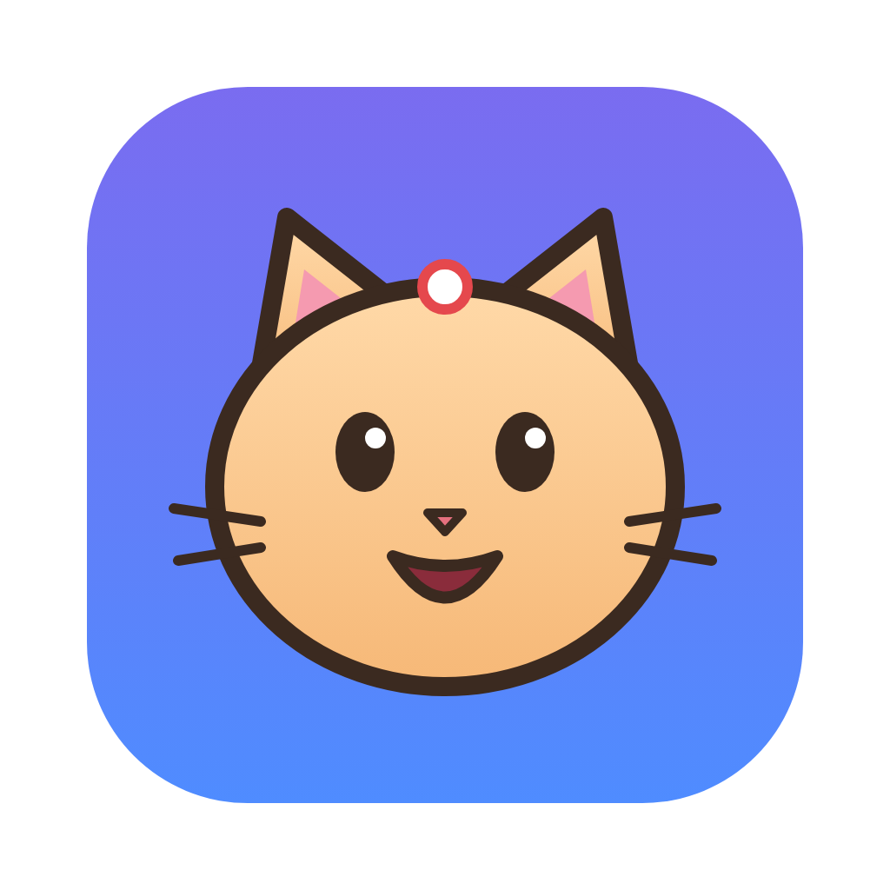

User Manual
Version 0.0.1 · second edition: the camera, effects, walk cycles and automatic lip sync · September 2026
About the pictures. The screenshots in this manual are of the real app. Numbered pink circles point at the parts of the screen that the list under each picture explains. Keyboard shortcuts are shown for a Mac: on Windows, use Ctrl wherever this manual says ⌘, and Alt for ⌥ Option.
This edition
Everything added since the first version of this manual
The first edition of this manual covered drawing, rigging, posing, sound, lip sync and export. Since then Nyahmation has gained a camera, effects, tools for walks and repeats, and a lot of smaller helpers. If you already know the app, this page is a map of what to read. Chapters marked new in the contents are new from start to finish.
| What | In short | Read |
|---|---|---|
| The camera | Pan, zoom and turn the view on the timeline with the Camera tool. The characters don't move; only what you see does. | |
| Depth and scrolling | Far hills that move less than the foreground, a sky gradient, a title fixed to the screen, a speech bubble that follows a head, and scenery that scrolls past forever. | |
| Gradients | Any shape can be filled with a straight or round gradient. | |
| Effects | Drop shadow, outer glow, blur, haze and contact shadow; blend modes; clipping (pupils that stay inside the eye). All of the numbers can be animated. | |
| Cut, copy and paste | Parts and whole layers in Build mode, even between projects; poses in Animate mode. | |
| Shape tools | Union, Subtract, Intersect and Exclude combine shapes into new ones. | |
| Swatches and eyedropper | A palette of the project's colours, and picking a colour from anywhere on the screen. | |
| Walks and repeats | Mirror Pose, Swap Sides, and cycles: a layer that repeats a stretch of its animation, optionally moving on each time. | |
| Timing tools | A custom easing curve, stretching a range of poses, draw-order changes over time, and switching between ones and twos mid-scene. | |
| Automatic lip sync | Nyahmation listens to the dialogue and fills in the mouth shapes for you to polish. | |
| More export formats | H.265, WebM (optionally see-through) and ProRes 4444 MOV for video editors. | |
| Library updates | Save a new version of a character and update the projects that use it, keeping their animation. | |
| Autosave | Unsaved work is kept safe and offered back if Nyahmation closes unexpectedly. | |
| Smooth preview | A Preview quality setting, a live frame-rate readout, and a speed test for your computer. |
Nyahmation is a studio for making cartoons. You draw a character (or import one), connect its parts at joints like a paper puppet, pose it on the frames that matter, and Nyahmation fills in every frame in between. Add a voice, let Nyahmation (or you) match the mouth shapes to it, point a camera at the scene, and export a video you can play anywhere.
Think of a flip book. Drawing every page by hand is a lot of work. In Nyahmation you only set up the important pages, called poses: the arm down on frame 1, the arm up on frame 12. Nyahmation draws the 10 pages in between for you, smoothly. Want the move faster? Slide the second pose closer to the first. That's the whole trick, and the rest of this manual builds on it.
There is no difference between a "keyframe" and a normal frame: you can pose on any frame at any time, and only the parts you actually move get a pose. If you wave a hand on frame 20, the legs aren't affected.
It helps to picture three separate things, because Nyahmation keeps them separate too:
When something surprises you, asking "am I moving the puppet, the camera, or the sound?" usually explains it.
Try it first. Choose File → Open Demo Puppet. It opens Pip, a ready-made character who waves and talks. Poke around: you can't break anything, and
Once Nyahmation is installed in Applications, open it like any other app: from Launchpad, the Dock, or by double-clicking it. Double-clicking a saved project (a .nyah file) opens it too.
Nyahmation isn't in the App Store; you make the app from its source code once. You need Node.js (the LTS version from nodejs.org) and a copy of the code (from GitHub: pick the branch, then Code → Download ZIP). Then, in Terminal, inside the Nyahmation folder:
npm install
npm run dist:mac
After 5–10 minutes a Finder window shows Nyahmation-0.0.1.dmg. Double-click it and drag Nyahmation onto Applications. That's it: from now on nobody needs Terminal.
If macOS blocks it the first time ("can't check it for malicious software"), click Done, then open System Settings → Privacy & Security, scroll down, and click Open Anyway. This happens because the app isn't signed with a paid Apple developer account; it's only needed once.
To try it without installing, run npm run dev in the same folder instead. The app opens and runs until you close Terminal.
npm install also fetches Rhubarb Lip Sync, the free program that listens to dialogue for Auto lip sync (). It's about 90 MB and needs the internet once. If that download was skipped or failed, run npm run setup in the Nyahmation folder, and build the app again. Everything else works without it. On a Mac with Apple Silicon, Rhubarb runs through Rosetta; if macOS offers to install Rosetta, say yes.
Apps in Applications are shared by every account on the Mac, so each person finds Nyahmation in their own Launchpad. Each person's projects and library stay in their own account. The first time someone saves to the library, macOS asks whether Nyahmation may use their Documents folder: click Allow.
Here is the whole window, with Pip the demo puppet open in Build mode and one part selected.
| Mode | What it's for |
|---|---|
| Build | Drawing, arranging and rigging. Changes here are the character's resting look: how it looks when nothing is animated. |
| Animate | Posing on the timeline, the camera, sound and lip sync. Every change you make is recorded as a pose on the current frame. The timeline appears at the bottom. |
On a Mac the menus are in the menu bar at the top of the screen.
Everything in Nyahmation is drawn with vector shapes: outlines made of points and curves. They stay perfectly sharp at any size, and you can reshape them at any time.
| Tool | Key | How to use it |
|---|---|---|
| Select | V | Click a part to select it, and drag to move it. Drag the square handles to resize (⇧ keeps the proportions, ⌥ resizes from the centre) and the round handle to rotate (⇧ snaps to 15°). Drag on an empty spot to select everything in a box. Double-click a shape to edit its points. |
| Points | A | Reshape a shape by moving its points, their handles, or the curves between them. |
| Pen | P | Click to place corner points; click and drag to make curves. Click the first point to close the shape. Enter or a double-click finishes an open line; Backspace removes the last point. |
| Rectangle | M | Drag out a rectangle. Set rounded corners in the tool options. |
| Ellipse | L | Drag out an oval. Hold ⇧ for a circle. |
| Polygon | Y | Drag out a shape with equal sides. Choose how many sides in the tool options. |
| Star | S | Drag out a star. Choose the number of points and how deep the dents are. |
| Line | \ | Drag a straight line. ⇧ keeps it at 45° steps. |
| Hand | H | Drag to move your view of the canvas. |
For all the shape tools, hold ⇧ to keep the shape even (a square, a circle) and ⌥ to draw from the centre out.
With a shape selected, the Fill & stroke section in Properties sets its colours. Untick Fill or Stroke to leave it out. The settings you choose are also used for the next shapes you draw. Holes decides what happens where a shape overlaps itself (for example, the middle of a letter O).
Set Fill type to Gradient (straight) for colours that fade from one side to the other (a sunset, a shiny tube) or Gradient (round) for colours that fade from the middle outwards (a glowing sun, a ball). Pick the two colours below it, and for a straight gradient its Angle. Gradients in imported SVG files are kept too.
Select two or more overlapping shapes in Build mode and choose one of the Object → Shape Tools. Think of cookie dough and cutters:
| Tool | Key | What you get |
|---|---|---|
| Union | One shape covering all of them, like pressing lumps of dough together. Good for a cloud made of circles. | |
| Subtract | The back shape with the front shapes cut out of it, like a cookie cutter. Good for a crescent moon or a bite out of an apple. | |
| Intersect | Only the part where they all overlap. Good for a lens or a leaf. | |
| Exclude | Everything except where they overlap; the overlaps become holes. |
The result keeps the back shape's name, colours and effects, and its curves stay smooth and editable with the Points tool. It's one undo step.
In Build mode, Edit → Cut, Copy and Paste (
Typing? While you're typing in a text field, the same keys cut, copy and paste the text instead.
File → Import Art or Sound… (
A scene is a stack of layers. Each layer holds parts, and parts can hold other parts. The Layers panel shows all of it, front to back.
A part inside another part moves with it, like a hand attached to a forearm attached to an upper arm. This is what makes a puppet: move the upper arm and everything below it comes along.
Tip. Clicking on the canvas selects the exact part under the mouse (the hand, not the whole arm). Use the Layers panel, or
Inside a character, which part is drawn in front is separate from the part tree. That means a back arm can be inside the torso (so it moves with it) and still be drawn behind it. Use Bring Forward and Send Backward to change it. In Animate mode the same commands change the order from the current frame on, for an arm that swings behind the body ().
Rigging means telling Nyahmation where each part bends: the shoulder, the elbow, the knee. It takes a few minutes and then posing is a matter of dragging.
| Setting | What it does |
|---|---|
| Position | The exact position of the joint. |
| Chain root | Posing stops at this joint. Double-clicking a joint with the Joints tool does the same; chain roots are drawn as squares. |
| Limits | Stop a joint turning too far, so an elbow can't bend backwards. Set the smallest and largest angle. |
| Bends | Which way a straight arm or leg bends first when you pull on it (clockwise or counter-clockwise). |
With the Pose tool (K), drag any part and the parts it's attached to bend to follow, the way a real arm does. This is called inverse kinematics (IK). Hover over a part first to see which joints will turn. In Build mode, posing sets the character's resting pose; in Animate mode, it records a pose on the current frame.
| Drag with… | What happens |
|---|---|
| Nothing held | The parents bend to follow (the elbow and shoulder turn when you drag the hand). |
| ⇧ Shift | The part turns at its own joint only (just the hand turns at the wrist). |
| ⌥ Option | The part moves away from its joint. |
| ⌘ Command | The whole character moves. |
The library is your collection of reusable characters, backgrounds and shapes, shared by all your projects. It's a folder of files in Documents/Nyahmation Library.
A background keeps its depth, scrolling and fixed-to-camera settings in the library ().
Click Add. The project gets its own copy, so you can change it freely without changing the library, and you can add the same item as many times as you like (a crowd of Pips!). Shapes land where they were when you saved them.
Say Pip gets a new hat. The projects that already use Pip each have their own copy, so they don't change by themselves; you decide when they do. Think of it like a recipe card: each project baked its own cake from the card, and updating the card doesn't change cakes already baked until you bake again.
Organising. Click Folder to open the library in Finder. Make subfolders there, such as Mouths or Characters/Animals, and move items into them; the Library tab shows the folders. Click ↻ after making changes in Finder.
Switch to Animate mode with the button at the top. The timeline appears at the bottom of the window.
While a scene plays, the timeline bar shows Showing 24 of 24 fps: how many frames a second your computer is actually drawing. If it turns orange (say, Showing 15 of 24 fps), some frames are being skipped to keep up with the sound. The picture stays in time; it's just less smooth. Effects such as blur are the usual cause.
Exports are never affected. The Preview setting only changes what you see while working. Exported videos always draw every frame at full quality, however long that takes.
An arm that swings behind the body needs to change its place in the stacking order partway through the move. In Animate mode, select the part, go to the frame where it should pass behind, and choose Send Backward (
With nothing selected (press Esc), Properties shows the scene: its size in pixels (1920 × 1080 is standard HD video), the frame rate (24, 25, 30 or 60 frames a second; 24 is the classic cartoon rate), the length in frames, the background colour, an optional Sky gradient (), and Animate on ().
Timing is what makes animation feel alive, and in Nyahmation it's just dragging:
Lip sync stays put. Dragging on the Scene or a layer row never moves the mouth shapes, because the voice they match doesn't move. To shift the mouth, drag on the Mouth's own row.
Dragging poses one by one is fine for one move. To make a whole passage slower or faster, set a loop range around it (I and O), then type a new length into Stretch to … frames on the timeline bar. The poses inside spread out or squeeze together evenly, like stretching a spring, and every pose after the range moves along so the rest keeps its timing.
Select a pose and choose Motion out in Properties. It decides how the move from this pose to the next one travels:
| Choice | Looks like |
|---|---|
| Smooth | The default. Flows naturally through the poses. |
| Ease in and out | Starts slowly, speeds up, and settles gently. Good for a move that starts and stops. |
| Ease in | Starts slowly, ends fast. Good for a fall or a throw. |
| Ease out | Starts fast, ends slowly. Good for landing or coming to rest. |
| Linear | The same speed all the way. Mechanical things. |
| Hold | Doesn't move at all, then jumps to the next pose. Snappy, cartoony changes. |
| Custom curve… | Your own timing, drawn as a curve (below). |
The curve is a graph of the move: time runs left to right, and how far the part has got runs bottom to top. Steep means fast; flat means slow. Drag the two handles to bend it. Push a handle above the top for an overshoot (the arm swings a little past its pose and settles back) or below the bottom for an anticipation (a little wind-up the other way first, like crouching before a jump). The presets Gentle, Snappy, Slow start, Overshoot and Anticipate are good starting points.
Classic hand-drawn cartoons often show each drawing for two frames ("on twos"), which gives a lively, drawn feel. Set Animate on in the scene's Properties to Ones, Twos or Threes, or change it for just one character in its layer's Properties. Mouths always stay on ones, so lip sync stays accurate, and so does the camera.
Tick Onion skin on the timeline to see faint copies of nearby frames: red for earlier, green for later. It shows the path a movement takes, so you can check that an arm swings in a nice arc.
When a character walks or crouches, its feet should stay planted instead of sliding. That's what pins are for.
The yellow bar on the part's row shows the frames where it's pinned. Pins hold the foot to the stage, so the camera can move all it likes without the foot sliding.
A walk is the classic animation exercise, and three tools make it much quicker: copying poses, mirroring them, and repeating a stretch of animation as a cycle. They're useful well beyond walks, too: a blink every few seconds, a flag flapping, a dog wagging its tail.
In Animate mode, Copy (
Mouth shapes aren't included, because they belong to the dialogue.
Both work in Animate mode on the selected parts, or on the whole active character if nothing is selected, and record poses on the current frame. They need to know which parts are a pair, and they find out from the names: left/right, front/back, or a lone L/R ("Arm L", "leg_R"). Parts inside a pair pair up too, so "Hand" inside "Forearm (front)" pairs with "Hand (back)" inside "Forearm (back)".
| Command | Key | What it does |
|---|---|---|
| Mirror Pose | Flips the pose side to side, like looking in a mirror: the left arm takes the right arm's pose turned the other way, and parts without a partner (the head, the torso) turn the other way themselves. For characters facing the camera: wave with the other hand in one keystroke. | |
| Swap Sides | Paired parts swap poses exactly as they are; everything else stays. For characters seen from the side, this is the second half of a walk: the left leg does what the right leg just did. |
A cycle is like a record's groove: the needle goes round the same loop again and again. Select a character's (or background's) layer, tick Repeat frames in its Properties, and set From and To. If you've set a loop range, the cycle starts with it. After frame To, the layer plays frames From to To again, for the rest of the scene.
Every scene has a camera. At first it simply looks at the whole scene, but you can move it on the timeline like any part: slowly push in on a face, pan across a landscape, or tilt the picture for a dizzy moment.
Imagine a real film set. The actors stand on the stage, and the camera operator moves the camera around them. The camera never pushes an actor. It's the same in Nyahmation: the camera only changes what you see. Characters, poses and pins stay exactly where they are on the stage, so a pinned foot never slides because the camera moved.
Camera moves are poses like any other: they appear on the Camera row, can be dragged to retime them, and use the same easing (an Ease in and out camera move feels like a smooth dolly). Dragging on the Scene row retimes them together with everything else.
With the Camera tool chosen, or the Camera row selected, Properties shows the camera on this frame:
| Setting | What it does |
|---|---|
| Centre X / Y | The stage point in the middle of the picture. |
| Zoom | 100% shows the whole scene; 200% shows half as much, twice as big. |
| Turn | Tilts the picture, in degrees. |
| View | Look through the camera: the same as Camera view on the timeline. |
| Whole scene on this frame | A camera pose back at the start: the whole scene, straight, at 100%. |
| Remove all camera moves | Deletes every camera pose (you can undo it). |
Camera view (on the timeline bar, on by default) shows the picture exactly as the video will. Turn it off to see the whole stage, with the camera's frame drawn on it in orange. That's handy when a character is about to walk into the shot and you need to pose it while it's still out of the picture. All the tools work either way.
Pictures and zoom. Zooming in enlarges everything, including PNG pictures. The export window takes the camera's closest zoom into account when it warns about pictures that may look soft.
Once there's a camera, backgrounds can do much more than sit there. Each layer's Properties have a Camera and scrolling section.
Look out of a train window: the fence next to the track whizzes past, the trees go by more slowly, and the mountains hardly move. That difference, called parallax, is how our eyes judge distance, and it makes a flat cartoon feel deep.
Give each background layer a Depth. 1 is the stage, where the characters are. Less than 1 is further away and moves less when the camera pans or zooms: try 0.3 for far hills and 0.6 for nearer ones. More than 1 is foreground and moves more: 1.5 for a bush right in front of the camera. Depth only shows when the camera moves, so add a camera pan to see it.
Press Esc to see the scene's Properties and tick Sky: Gradient. Pick the top and bottom colours. The sky fills the whole picture, fading from top to bottom, and stays put whatever the camera does, like a real sky.
Tick Fixed to the camera for a layer that should stay in the same place on screen, at the same size, whatever the camera does: a title, a logo, a narrator in the corner. It's like a sticker on the camera's lens.
A fixed layer can also follow a part in another layer. It rides along with the part but keeps its own size and angle, so a name tag stays readable and a speech bubble stays level when the head tilts or the camera zooms in.
When the camera zooms in, the bubble stays the same size on screen, and its distance from the head grows with the head, so it never ends up on top of the face.
Scroll slides a layer sideways as the scene plays, in pixels a second; negative numbers go left. Tick Repeat sideways and copies of the layer are laid side by side, so it never runs out. Use it for clouds drifting by, scenery passing a car window, or the ground under a character walking on the spot.
Treadmill walk. Put the character in the middle with a walk cycle (without Keep moving), and scroll the ground and scenery at walking speed, the far layers more slowly than the near ones.
Background layers saved to the library keep their depth, scrolling and fixed setting. (A "follows" link isn't kept, because the part it named belongs to another project.)
Effects add the finishing touches: a shadow to lift a character off the background, a glow for magic, haze to push far hills into the distance.
Select a part (its Properties have an Effects section) or a layer's row (Layer effects, for the whole layer), and choose from Add an effect…. × removes one.
| Effect | Settings | Good for |
|---|---|---|
| Drop shadow | Colour, opacity, direction, distance, softness | Lifting a character or a title off the background. |
| Outer glow | Colour, opacity, size, strength (1 is normal, up to 4) | Magic, lamps, a glowing sun, neon signs. |
| Blur | Amount | Things far away or out of focus, and speed. |
| Haze | Colour, amount | Fading distant layers toward the sky colour, as air does with real mountains. |
| Contact shadow | Opacity, ground (how far down the stage the floor is; it starts at the part's lowest point), width (a share of the part), softness | A soft oval on the ground under a character. As the character jumps, it shrinks and fades. |
A shadow on a character's layer casts one shadow of the whole character, the way a real shadow works. If every part cast its own, the shadows would double up and look darker wherever parts overlap, such as the arm over the body. In the same way, an effect on a group (an arm with its forearm and hand) applies to the group as one picture.
In Animate mode, changing an effect's number records a pose, like moving a part: a glow can pulse, a shadow can lengthen as the sun sets, a blur can sharpen as something comes into focus. The marks appear on the part's row and retime like any other. Colours don't animate.
| Blend | Does |
|---|---|
| Normal | Covers what's behind. |
| Multiply (shading) | Darkens what's behind, like a coloured filter. Draw shading shapes in a soft blue or purple on Multiply. |
| Screen (light) | Lightens what's behind: highlights and light beams. |
| Add (bright light) | Lightens even more strongly: sparks, fire, glows. |
| Overlay (contrast) | Makes lights lighter and darks darker. |
Tick Clip (“Parts inside only show on this shape”) on a shape, and the parts inside it only show where the shape itself is. Put the pupil inside the eye white and clip: the pupil can look all the way to the side and never pokes out of the eye. It works for shading inside a body, a pattern on a shirt, or a face in a window.
Speed. Blur and big glows are the slowest things Nyahmation draws. Parts that don't change from one frame to the next (most scenery) are drawn once and reused, so they cost little. If playback stutters, lower the Preview quality (); exports are always full quality. Onion skins leave effects out, to stay quick.
Add a voice recording, sound effects or music. Nyahmation plays it in time with the picture and puts it in the exported video.
Recording tip. Record dialogue with your phone's voice memo app or QuickTime Player (File → New Audio Recording), in a quiet room, and save or share it to the Mac. Speak a little more clearly and slowly than normal; it makes lip sync easier, for you and for Auto lip sync.
A talking character swaps between a handful of mouth drawings, one for each group of sounds. In Nyahmation the mouth is a switch layer: a part that shows one drawing at a time. You can type the letter of each mouth shape as you hear the dialogue, or let Nyahmation listen and fill them in for you.
These are the classic cartoon mouth shapes. Draw one of each for your character (you can start with just A, C, D and X and add the rest later).
Using PNG pictures instead? Name the files A.png, D.png and so on, select the Mouth, and click Add drawings from files… in Properties. Each file lands on its letter.
Properties also lists any of the nine shapes that are still missing. Clicking a drawing in Build mode makes it the rest mouth: the one shown when nothing is animated.
Nyahmation can listen to the dialogue and fill in the mouth shapes for you, using Rhubarb Lip Sync. It's a great first draft: it gets most shapes right, and you spend your time polishing instead of typing every letter.
To retime one mouth, drag the left edge of its block on the Mouth row (⇧-drag moves the ones after it too).
Tips from animators. Mouths usually look best a frame or two before the sound. To nudge a whole phrase, select its ◆ marks on the Mouth row and ⇧-drag. Don't try to show every letter: hit the big, visible sounds (M/B/P closing, wide vowels) and let the rest go.
Letters beat tool keys. While the Mouth is selected in Animate mode, the letter keys set mouth shapes (so H sets the H mouth instead of choosing the Hand tool). Press Esc to deselect the Mouth and get the tool keys back.
Switch layers aren't just for mouths: make one for eyes (open, half, closed, for blinks), hands (fist, open, pointing) or eyebrows. If the drawings aren't named after mouth letters, press 1–9 to pick them, or click them in the palette. The playhead doesn't move on for these.
A character's frames remember letters, not pictures. You can redraw a mouth, or swap in a different drawing set with Drawing set, and all the lip sync follows.
| Format | Best for |
|---|---|
| MP4 video (H.264) | Watching and sharing: plays on phones, computers, YouTube and messaging apps. Includes the sound. If in doubt, pick this one. |
| MP4 video (H.265) | The same quality in a smaller file. Plays on recent Macs, iPhones and most new devices; older computers may not play it. |
| WebM video (VP9) | Web pages. Can have a see-through background, to put a character over a web page or other footage. |
| MOV (ProRes 4444) | Video editing apps (Final Cut Pro, Premiere, DaVinci Resolve). Top quality, very big files, optional see-through background, and the sound uncompressed. |
| PNG image sequence | One picture per frame, for video editing and compositing apps. Can have a see-through background. The sound is saved beside the pictures as soundtrack.wav. |
A project is one scene, saved as one .nyah file. The file holds everything: the drawings, the animation, the camera, pictures and sounds, so you can copy it to another computer or back it up in one piece.
While a project has unsaved changes, Nyahmation quietly keeps a copy of it, about once a minute, in its own folder. It doesn't replace your file; it's a safety net under it, in case the computer crashes, the battery dies, or the app is forced to quit. When you save, open another project or discard your changes, the copy is deleted.
If Nyahmation didn't close properly last time, it says so when it starts, with the name of the work and when it was last copied:
| Button | What happens |
|---|---|
| Restore | Opens the work as unsaved changes to its original file. Press Save to put it back where it came from. |
| Delete | Throws the copy away. |
| Decide later | Keeps the copy and asks again the next time Nyahmation starts. |
Still save often. Autosave keeps at most a minute's work at risk, but only
Library items are .nyahitem files in Documents/Nyahmation Library. They are ordinary files: you can back them up, share them, or organise them in folders.
Almost everything can be undone with
| Tools | |
|---|---|
| Select | V |
| Points | A |
| Joints | J |
| Pose | K |
| Pen (Build) / Pin (Animate) | P |
| Camera (Animate) | C |
| Rectangle | M |
| Ellipse | L |
| Polygon | Y |
| Star | S |
| Line | \ |
| Hand | H or hold Space |
| Build mode | |
|---|---|
| Nudge | Arrow keys (⇧ = 10 px) |
| Delete selection | Delete |
| Deselect / stop editing points | Esc |
| Select parent | |
| Finish a pen line | Enter |
| Cut / copy / paste parts | |
| Union / Subtract | |
| Intersect / Exclude | |
| Camera tool (Animate) | |
|---|---|
| Pan | drag |
| Zoom | ⌥ drag up/down |
| Turn | ⇧ drag |
| Animate mode | |
|---|---|
| Play / pause | Space |
| Previous / next frame | ← → |
| Previous / next pose | |
| First / last frame | Home End |
| Loop in / out | I O |
| Delete selected poses or sound | Delete |
| Deselect everything | Esc |
| Copy / paste a pose | |
| Mirror Pose | |
| Swap Sides | |
| Change draw order from here | |
| Lip sync (Mouth selected) | |
|---|---|
| Set a mouth shape | A–H, X |
| Pick drawing 1–9 | 1–9 |
| Step back and clear | Backspace |
| Timeline dragging | |
|---|---|
| Retime a pose | drag ◆ |
| Retime and shift the rest | ⇧ drag |
| Copy a pose (hold) | ⌥ drag |
| Select more poses | ⇧ click |
| Retime a mouth | drag its block's left edge |
On a MacBook keyboard, Home is
| Word | Meaning |
|---|---|
| Blend mode | How a part mixes with what's behind it: covering it, darkening it (Multiply) or lightening it (Screen, Add). |
| Camera | What films the stage. Moving it changes the picture, never the characters. |
| Chain root | A joint where posing stops. Dragging a hand turns the arm, but not past a chain root at the shoulder. |
| Clip | Showing the parts inside a shape only where the shape is, like pupils inside an eye. |
| Contact (pose) | The moment in a walk when the front heel touches the ground. |
| Cycle | A stretch of animation that repeats, such as one step of a walk. |
| Depth | How far away a layer is, which decides how much it moves when the camera does. |
| Easing | How a movement speeds up and slows down between two poses. |
| Effect | A finishing touch drawn on a part or layer as a whole: shadow, glow, blur, haze. |
| Frame | One picture of the animation. At 24 frames per second, 24 frames make one second of video. |
| Frame rate (fps) | How many frames are shown each second. |
| Gradient | A fill that fades from one colour to another. |
| Hold | A pause: the same pose on two frames, so nothing moves between them. |
| IK (inverse kinematics) | Dragging the end of a limb (a hand) and letting the joints above it (elbow, shoulder) work out how to bend. |
| In-betweens | The frames between two poses, which Nyahmation fills in for you. |
| Joint | The point a part turns around, where it attaches to its parent. |
| Layer | A level of the scene: a character or a background. |
| Lip sync | Matching a character's mouth shapes to the words it says. |
| Loop range | A stretch of frames that playback repeats, set with I and O. |
| On twos | Showing each pose for two frames, for a hand-drawn feel. |
| Onion skin | Faint copies of the frames before and after, to see a movement's path. |
| Overshoot | Moving a little past a pose and settling back, for a lively, springy feel. |
| Parallax | Near things seeming to move faster than far things as the camera moves. |
| Parent / child | A child part is inside its parent and moves with it (the hand is a child of the forearm). |
| Passing (pose) | The moment in a walk when one leg passes the other. |
| Pin | Fixing a part to a spot on the stage from a certain frame, so it stays put while the rest moves. |
| Pose | A position of a part (or the camera) recorded on a frame, shown as ◆ on the timeline. |
| Rest pose | How a character looks when nothing is animated; set in Build mode. |
| Rig | A character's joints and part tree, which make it posable like a puppet. |
| Scrubbing | Dragging the playhead back and forth to see (and hear) the frames. |
| Stage | The world the characters and scenery stand in, which the camera films. |
| Swatch | A saved colour in the project's palette. |
| Switch layer | A part that shows one drawing at a time from a set, such as mouth shapes. |
| Vector | Artwork made of points and curves, which stays sharp at any size. |